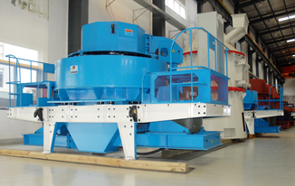

Sand making machine
2015-01-27
Sand making machine is suitable for crushing medium soft and hard or extremely tough supplies, and sand making machine is broadly utilized in big, smelting, building material, highway, railway, water conservancy and chemical business and lots of other industries.
But precisely how am i most likely to rust making a protection?
The brand new Sand making machine can make a larger and bigger function within the marketplace. Because the all-natural sandgradually reduced, artificial sand will progressively switch the natural sand inevitable. However the new sand making machine inside the course will is accessible some problems. Because of the substantial atmosphere in the new sand machine is not good or sits dormant for any extremely lengthy time, the rust from the new sand making machine is really a issue, affecting the standard of sand making machine. How you are able to solve this problem in the new sand making machine is crucial. And So I share a few tips of sand making machine according to think about your experience for everybody.
To start with, I want help remind everybody that sand making machine, crusher, milling machine and numerous of mining equipment derive from the basic structure of steel because the material production.Because the sand making machine extends outdoors function, vapor fairly full, and idle for time, the rust from the is definitely an ordinary chemical reaction. There's rust inside the machine crushing chamber, that is due to the interior wall and also the material (usually higher hardness rocks, minerals and so forth) inside the crushing process for friction, its inner wall scratches, lengthy-term shelve you are able to effortlessly rust. Rusty is not essential, but it ought to become timely therapy to prevent lengthy-term rust, leading to harm to the device, sand making machine modify the normal use. You'll find 4 primary methods rust following:
The very first is chemical descaling technique: mainly using acidity and metal oxide chemical reaction. Consequently eliminating a technique for efficient sand making machine rust metal surface corrosion items, known as pickling rust. This addition rust are only able to become employed in the workshop.
The second is high-pressure water abrasive raging: the outcome of using ruthless water jet action (plus abrasive grinding action) and pry the function water to obtain rid of rust and covered sand machine method on the steel plate. It attributes no dust pollution, no harm to the steel plate, significantly enhancing the efficiency of rust, as much as 15m2 / h or perhaps much more, and leading high quality rust. However, the rusted steel easily return rusted, which must especially fresh paint wet rust fresh paint which has a higher effect around the overall overall performance in the fresh paint coating.
The third is little pneumatic or electric rust. This process mainly utilizes electrical energy or compressed air as energy. the crusher machine is put together the right descaling goods.Crusher machine make reciprocating or spinning movement to match the needs of many occasions rust.
In the final, I assist remind any time the consumer in the device usage or idle time, repair and maintenance ought to become completed. You cannot unwind, simply because a good overall performance in the method is definitely an emblem for that enterprise revenue.
 SBM has three factories, the gross area is about 2.3 million square meters.
SBM has three factories, the gross area is about 2.3 million square meters.